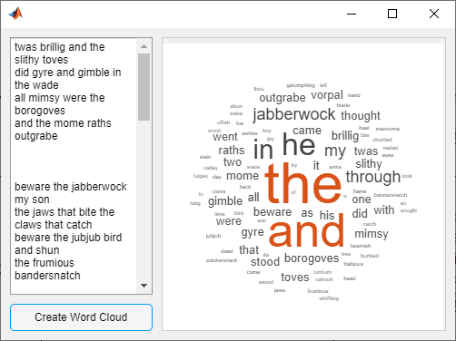

Share Data Among Callbacks
You can write callback functions for UI components in your app to specify how it behaves when a user interacts with it. (For more information on callback functions in apps, see Create Callbacks for Apps Created Programmatically.)
In apps with multiple interdependent UI components, the callback functions often must access data defined inside the main app function, or share data with other callbacks. For instance, if you create an app with a list box, you might want your app to update an image based on the list box option the app user chooses. Since each callback function has its own scope, you must explicitly share information about the list box options and images with those parts of your app that need to access it. To accomplish this, use your main app function to store that information in a way that can be shared with callbacks. Then, access or modify the information from within the callback functions.
Store App Data
The UI components in your app contain useful information in their properties. For
example, you can find the current position of a slider by querying its
Value property. When you create a UI component, store the component
as a variable so that you can set and access its properties throughout your app code.
In addition to their pre-defined properties, all components have a
UserData property, which you can use to store any MATLAB® data. UserData holds only one variable at a time, but you
can store multiple values as a structure array or a cell array. You can use
UserData to store handles to the UI components in your app, as well
as other app data that might need to be updated from within your app code. One useful
approach is to store all your app data in the UserData property of the
main app figure window. If you have access to any component in the app, you can access the
main figure window by using the ancestor function. Therefore, this keeps all
your app data in a location that is accessible from within every component callback.
For example, this code creates a figure with a date picker component. It stores both the
date picker and today's date as a structure array in the UserData
property of the figure.
fig = uifigure; d = uidatepicker(fig); date = datetime("today"); fig.UserData = struct("Datepicker",d,"Today",date);
Note
Use the UserData property to store only the data directly related
to your app user interface. If your app uses large data sets, or data that is not created
or modified inside your app code, instead store this data in a separate file and access
the file from within your app.
In simple applications, instead of storing your app data in the
UserData property, you can store data as variables in your main app
function, and then provide each callback with the relevant data using input arguments or
nested functions.
Access App Data From Callback Functions
To access app data in a component callback function, use one of these methods:
Access Data in UserData — Use this method to update app data from within the callback function. It requires you to have stored app data in the
UserDataproperty, as described in the previous section.Pass Input Data to Callbacks — Use this method in simple apps to limit what data the callback has access to, and to make it easier to reuse the callback code.
Create Nested Callback Functions — Use this method in simple apps to provide your callback functions with access to all the app data, and to organize your app code within a single file.
Each section below describes one of these methods, and provides an example of using the method to share data within an app. For each example, the final app behavior is the same: the app user can enter text into a text area and click a button to generate a word cloud from the text. To accomplish this, the app must share data between the text area, the button, and the panel that holds the word cloud. Each example shares this data in a different way.

Access Data in UserData
To keep all your app data organized in one place, store the data somewhere that every
component can easily access. First, in the setup portion of your app code, use the
UserData property of the figure window to store any data a component
needs access to from its callbacks. Since every UI component is a child of the main figure,
you can access the figure from within the callback by using the
ancestor function. For example, if your figure contains a panel with
a button that is stored in a variable named btn, you can access the
figure with this
code.
fig = ancestor(btn,"figure","toplevel");
UserData of the figure.Example: Word Cloud App Using UserData
In the word cloud app, to share app data when the app user clicks the button, store
the data in the UserData property of the figure. Define a
ButtonPushedFcn callback function named
createWordCloud that plots a word cloud based on the text in the text
area. The createWordCloud function needs access to the value of the
text box at the time the button is clicked. It also needs access to the panel container to
plot the data in. To provide this access, set the UserData of the
figure to a struct that stores the text area component and the panel
container.
fig.UserData = struct("TextArea",txt,"Panel",pnl);
In the createWordCloud function, access the
UserData property of the figure. Since MATLAB automatically passes the component executing the callback to the callback
function as src, you can access the figure from within the callback by
using the ancestor function.
fig = ancestor(src,"figure","toplevel");
Then, you can use the figure to access the panel and the text.
data = fig.UserData; txt = data.TextArea; pnl = data.Panel; val = txt.Value;
To run this example, save the shareUserData function to a file
named shareUserData.m on the MATLAB path.
function shareUserData % Create figure and grid layout fig = uifigure; gl = uigridlayout(fig,[2,2]); gl.RowHeight = {'1x',30}; gl.ColumnWidth = {'1x','2x'}; % Create and lay out text area txt = uitextarea(gl); txt.Layout.Row = 1; txt.Layout.Column = 1; % Create and lay out button btn = uibutton(gl); btn.Layout.Row = 2; btn.Layout.Column = 1; btn.Text = "Create Word Cloud"; % Create and lay out panel pnl = uipanel(gl); pnl.Layout.Row = [1 2]; pnl.Layout.Column = 2; % Store data in figure fig.UserData = struct("TextArea",txt,"Panel",pnl); % Assign button callback function btn.ButtonPushedFcn = @createWordCloud; end % Process and plot text function createWordCloud(src,event) fig = ancestor(src,"figure","toplevel"); data = fig.UserData; txt = data.TextArea; pnl = data.Panel; val = txt.Value; words = {}; for k = 1:length(val) text = strsplit(val{k}); words = [words text]; end c = categorical(words); wordcloud(pnl,c); end
Pass Input Data to Callbacks
When a callback function needs access to data, you can pass that data directly to the
callback as an input. In addition to the src and event
inputs that MATLAB automatically passes to every callback function, you can declare your callback
function with additional input arguments. Pass these inputs arguments to the callback
function using a cell array or an anonymous function.
Example: Word Cloud App Using Callback Input Arguments
In the word cloud app, to share app data when the app user pushes the button, pass
that data to the ButtonPushedFcn callback function.
Define a ButtonPushedFcn callback function named
createWordCloud that plots a word cloud based on the text in the text
area. The createWordCloud function needs access to the value of the
text box at the time the button is clicked. It also needs access to the panel container to
plot the data in. To provide this access, define createWordCloud to
take the text area and panel as input arguments, in addition to the required
src and event
arguments.
function createWordCloud(src,event,txt,pnl) % Code to plot the word cloud end
Assign the createWordCloud callback function and pass in the text
area and panel by specifying ButtonPushedFcn as a cell array containing
a handle to createWordCloud, followed by the additional input
arguments.
btn.ButtonPushedFcn = {@createWordCloud,txt,pnl};To run this example, save the shareAsInput function to a file named
shareAsInput.m on the MATLAB path.
function shareAsInput % Create figure and grid layout fig = uifigure; gl = uigridlayout(fig,[2,2]); gl.RowHeight = {'1x',30}; gl.ColumnWidth = {'1x','2x'}; % Create and lay out text area txt = uitextarea(gl); txt.Layout.Row = 1; txt.Layout.Column = 1; % Create and lay out button btn = uibutton(gl); btn.Layout.Row = 2; btn.Layout.Column = 1; btn.Text = "Create Word Cloud"; % Create and lay out panel pnl = uipanel(gl); pnl.Layout.Row = [1 2]; pnl.Layout.Column = 2; % Assign button callback function btn.ButtonPushedFcn = {@createWordCloud,txt,pnl}; end % Process and plot text function createWordCloud(src,event,txt,pnl) val = txt.Value; words = {}; for k = 1:length(val) text = strsplit(val{k}); words = [words text]; end c = categorical(words); wordcloud(pnl,c); end
Create Nested Callback Functions
Finally, you can nest callback functions inside the main function of a programmatic app. When you do this, the nested callback functions share a workspace with the main function. As a result, the nested functions have access to all the UI components and variables defined in the main function.
Example: Word Cloud App Using Nested Callback
In the word cloud app, to share app data when the app user pushes the button, nest the
button callback function inside the main app function. Define a
ButtonPushedFcn callback function named
createWordCloud that plots a word cloud based on the text in the text
area. The createWordCloud function needs access to the value of the
text box at the time the button is clicked. It also needs access to the panel container to
plot the data in. To provide this access, define createWordCloud inside
the main nestCallback function. The nested function has access to the
t and p variables that store the text area and
panel components.
To run this example, save the nestCallback function to a file named
nestCallback.m, and then run it.
function nestCallback % Create figure and grid layout fig = uifigure; gl = uigridlayout(fig,[2,2]); gl.RowHeight = {'1x',30}; gl.ColumnWidth = {'1x','2x'}; % Create and lay out text area t = uitextarea(gl); t.Layout.Row = 1; t.Layout.Column = 1; % Create and lay out button b = uibutton(gl); b.Layout.Row = 2; b.Layout.Column = 1; b.Text = "Create Word Cloud"; % Create and lay out panel p = uipanel(gl); p.Layout.Row = [1 2]; p.Layout.Column = 2; % Assign button callback function b.ButtonPushedFcn = @createWordCloud; % Process and plot text function createWordCloud(src,event) val = t.Value; words = {}; for k = 1:length(val) text = strsplit(val{k}); words = [words text]; end c = categorical(words); wordcloud(p,c); end end